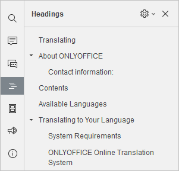
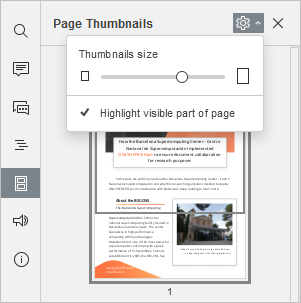

Podešavanja prikaza i alati za navigaciju
PDF Editor nudi nekoliko alata za pregled i navigaciju vašeg PDF-a: zumiranje, navigaciju kroz naslove, izbor teme interfejsa itd.
Podesite parametre prikaza
Da biste podesili podrazumevana podešavanja prikaza i izabrali najudobniji režim rada, idite na View karticu i izaberite koje elemente interfejsa želite da sakrijete ili prikažete. Možete izabrati sledeće opcije na View kartici:
- Naslovi – prikazuje naslove PDF-a na levom panelu.
- Zoom – postavlja željeni nivo zumiranja od 50% do 500%. Ista opcija nalazi se i na Home kartici.
- Prilagodi stranici - uklapa celu stranicu PDF-a u vidljivi deo radne oblasti.
- Prilagodi širini - uklapa širinu PDF stranice u vidljivi deo radne oblasti.
- Tema interfejsa – izaberite jednu od dostupnih tema interfejsa iz padajućeg menija: Same as system, Light, Classic Light, Dark, Contrast Dark, Gray, Modern Light, i Modern Dark. Kada je Dark, Contrast Dark ili Modern Dark tema omogućena, Dark Document prekidač postaje aktivan; koristite ga za podešavanje radne oblasti na belu ili tamnosivu.
-
Always Show Toolbar – kada je isključeno, gornja traka sa komandama biće sakrivena dok nazivi kartica ostaju vidljivi.
Alternativno, dvoklik na bilo koju karticu sakriva ili prikazuje gornju traku.
- Status Bar – kada je isključeno, statusna traka na dnu gde su Zoom, Fit to page, Fit to width dugmići biće sakriveni. Da biste prikazali skrivenu statusnu traku, omogućite ovu opciju.
- Left Panel - kada je isključeno, sakriva levi panel gde se Search, Comments, itd. dugmići nalaze. Da biste prikazali levi panel, uključite ovu opciju.
Kada su Comments ili Chat panel otvoreni, širina leve bočne trake može se prilagoditi prevlačenjem: pomerite kursor preko ivice panela dok se ne pojavi dvosmerna strelica i prevucite desno da proširite panel ili levo da ga vratite na prvobitnu širinu.
Koristite alate za navigaciju
Navigacija stranicama
Idite na Home karticu, gde se nalaze dugmad za navigaciju stranicama.
- - prikazuje broj stranice i ukupan broj stranica u PDF-u. Kliknite polje, unesite broj stranice i pritisnite
Enterda biste skočili direktno na nju. Isti indikator broja stranice može se naći i u donjem levom uglu. - - prelazak na prvu stranicu PDF-a.
- - prelazak na sledeću stranicu PDF-a. Isto dugme se nalazi i u donjem levom uglu.
- - prelazak na prethodnu stranicu PDF-a. Isto dugme se nalazi i u donjem levom uglu.
- - prelazak na poslednju stranicu PDF-a.
Naslovi
Kliknite Settings ikonu desno od panela Headings i izaberite jednu od dostupnih opcija iz menija:

- Expand all - proširuje sve nivoe naslova u Headings panelu.
- Collapse all - skuplja sve nivoe, osim nivoa 1, u Headings panelu.
- Expand to level - da biste proširili strukturu naslova na izabrani nivo. Npr., ako izaberete nivo 3, onda će nivoi 1, 2 i 3 biti prošireni, dok će nivo 4 i svi niži nivoi biti sažeti.
- Font size – da biste prilagodili veličinu fonta teksta panela Naslovi izborom jedne od dostupnih unapred podešenih postavki: Mali, Srednji i Veliki.
- Wrap long headings – prelama duge naslove u više redova.
Da ručno proširite ili skupite pojedinačne nivoe naslova, koristite strelice levo od naziva.
Da zatvorite Headings panel, kliknite Headings ikonu na levoj bočnoj traci ponovo.
Page Thumbnails
Kliknite na Page Thumbnails panel da pristupite Thumbnails podešavanjima:

- Prevucite klizač da podesite veličinu sličica.
- Označi vidljivi deo stranice je podrazumevano aktivno da bi se označila oblast koja je trenutno na ekranu. Kliknite na nju da biste je onemogućili.
Klik desnim tasterom na stranicu otkriva sledeće opcije: Umetnite praznu stranicu pre (trenutne), Umetnite praznu stranicu posle (trenutne), Rotirajte stranicu udesno, Rotirajte stranicu ulevo, Obrišite stranicu. Ove opcije se dostupne samo u Edit PDF režimu.
Da zatvorite panel Thumbnail stranica, kliknite na ikonu Thumbnails stranica na levoj bočnoj traci još jednom.
Zoom
Zoom dugmići se nalaze u donjem desnom uglu i koriste se za uveličavanje i umanjivanje trenutnog PDF dokumenta.
Da promenite trenutno izabranu vrednost uveličanja koja je prikazana u procentima, kliknite na nju i izaberite jednu od dostupnih opcija uveličanja sa liste (50% / 75% / 100% / 125% / 150% / 175% / 200% / 300% / 400% / 500%) ili koristite Zoom in ili Zoom out dugmiće. Podešeno skaliranje se zadržava za sve datoteke tokom trenutne sesije.
Kliknite na ikonu Prilagodi širini da prilagodite širinu stranice dokumenta vidljivom delu radnog prostora.
Da prilagodite celu stranicu dokumenta vidljivom delu radnog prostora, kliknite na ikonu Prilagodi stranici .
Postavke uveličanja su takođe dostupne na kartici Prikaz.